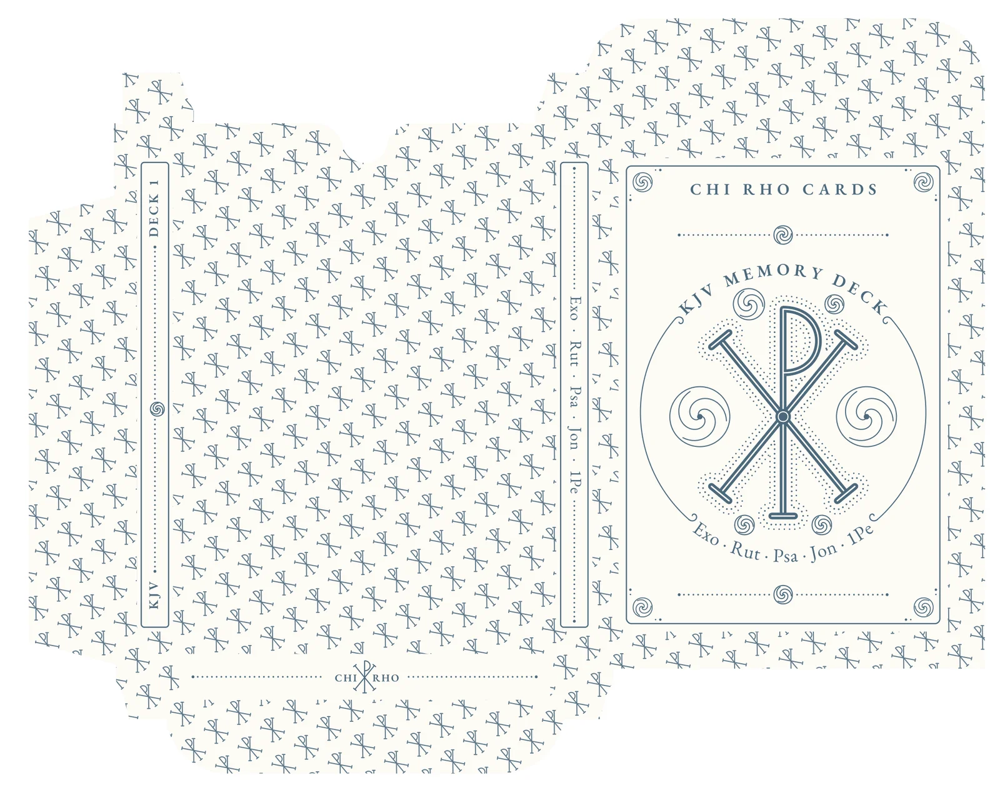

Chi Rho Cards · Tuck Box
Every rendition, newest first. Proof shows the printer's dieline over the art; print is the file sent to press. Click an image for its PDF.
v16
Study 4 of 4 (from v11) - Baroque: a glory of rays from the crossing. Badge only; rest of the box as v11.
- Precedent: 17th-century sunburst monstrances, whose rays alternate straight (the light that strikes) and wavy (the warmth that envelops).
- 56 rays from the crossing, held 2.8pt clear of the glyph and kept out of a 15pt halo around the boss, so the center stays calm.
- Classical read: the strongest hierarchy of the four - every line points to the center - and the drama suits the subject.
- Modern read: behind a line glyph the rays become texture and reduce figure-ground contrast; the most period-costume of the set. Rays are 0.4pt and will print as a soft tone.


v15
Study 3 of 4 (from v11) - Insular: Lindisfarne dotting around the glyph and Kells-style spiral roundels in every open space. Whole-box redesign.
- Precedent: the Lindisfarne Gospels trace their initials with two rows of red dots; the Chi Rho page of the Book of Kells (folio 34r) packs spiral whorls between the chi and the rho.
- Two rows of dots follow the glyph's outline; a triple-spiral roundel sits in each space between the strokes, sized to the largest circle that space can hold.
- Whole box: spiral corners, dotted rules with spiral centers above and below the badge, dotted rules on the side labels and bottom panel.
- Classical read: Gombrich's horror vacui - the space is filled evenly and the eye reads it as order; the most distinctive of the four and the closest to an illuminated page.
- Modern read: the busiest study; the dot halo thickens the glyph's silhouette and lowers contrast. Strong character, least restraint. Dots are 0.84pt across, so check a printed proof at size.

v14
Study 2 of 4 (from v11) - Roman: a laurel wreath crowns the Chi Rho, flanked by martyrs' palms. Whole-box redesign in laurel.
- Precedent: the Passion Sarcophagus (Vatican, c. 350) encircles the Chi Rho with a laurel wreath - the Roman victory crown recast as a sign of resurrection. Palms are the martyr's victory branch on countless early Christian epitaphs.
- The wreath (two branches tied with a ribbon bow at the foot) fills the band where the thin circle was; palm fronds fill the big side ovals, clipped clear of the glyph.
- Whole box: laurel corners, laurel rules tied with a bow above and below the badge, laurel sprigs on both side labels and around the bottom logo.
- Classical read: unity in variety - one motif family carried through every panel - and decorum: victory iconography suits a deck meant to be won by memorizing.
- Modern read: a coherent system with a clear story, but more texture; at arm's length the wreath reads as a grey frame, which is its job. Alternating leaves keep the straight rules from reading as arrow fletching.


v13
Study 1 of 4 (from v11) - Early Christian: Alpha and Omega flank the Chi Rho. Badge only; rest of the box as v11.
- Precedent: the bronze coins of Magnentius (353) set the Chi Rho between Alpha and omega, and the pairing runs through catacomb epitaphs after Revelation 1:8, 'I am Alpha and Omega'.
- Fills only the two largest open spaces (the big side ovals). The small pockets are left empty on purpose.
- Classical read: decorum and iconography - every added mark carries meaning; strict bilateral symmetry; the glyph stays the single focal point.
- Modern read: passes the Loos test (no ornament without a job); keeps the most negative space and the clearest figure-ground; strongest at thumbnail size and from across a room.
- Watch: the letters can compete with the glyph's weight, so they are held to about 18pt tall and centered in each space by its largest inscribed circle.


v12
v11 with a dense scrolling vine where the thin circle was: a waving stem with a curling tendril and a leaf at every turn, mirrored from the top and meeting at diamonds top and bottom.


v11
v10 without the thin circle around the glyph.


v10
From v7 with the engraved glyph; lilies and the 3/9 o'clock leaves removed; book list in the ink blue, without chapter numbers and with Psa listed once (front and left side).


v9
v8 with more filigree on the front: leafy vine sprigs hugging the badge on all four diagonals, a beaded ring inside the circle, lance leaves between the stem and the lower arms, and diamonds flanking CHI RHO CARDS.


v8
v7 with a special glyph: a paper hairline engraved down every stroke and a jeweled boss where the strokes cross.


v7
More filigree: a ring circling the glyph with scrolled arcs closing the circle between the two text arcs, lilies either side of the glyph, beaded rules on the front flourishes, and flourishes on both side labels and around the bottom logo.


v6
v5 with filigree: scrollwork in the four inner corners of the front border and a mirrored pair of flourishes above and below the badge.


v5
Front redesigned as a badge: KJV MEMORY DECK cambered over an enlarged glyph, abbreviated book list reverse cambered beneath it. Everything else as v2.


v4
Same as v2, with the book list left-aligned.


v3
Same as v2, with the book list right-aligned.


v2
Front border runs from the top of the front past the fold, CHI RHO CARDS above the fold, glyph then KJV SCRIPTURE MEMORY DECK, book list centered. Abbreviated book list on the left side, KJV / DECK 1 on the right side, logo on the bottom.


v1
First draft: pattern over the whole box, front label kept below the front fold, CHI XP RHO logo, book list centered.